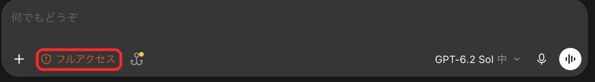
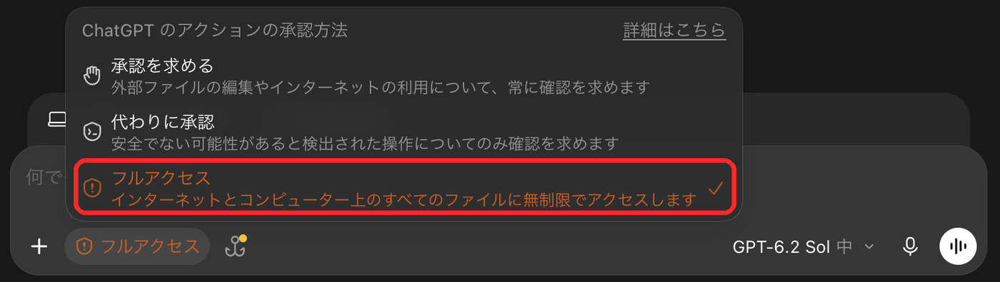
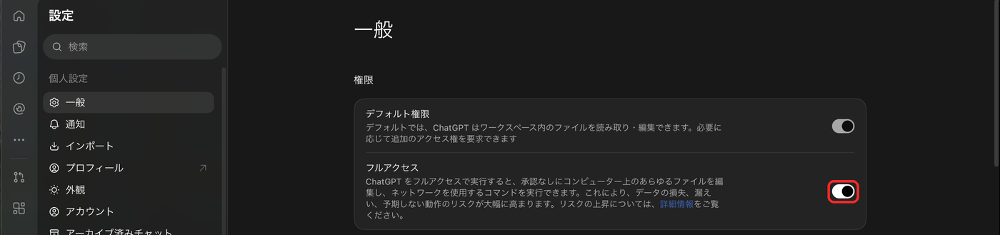

翻訳が「ENOTFOUND」で止まったときの直し方(Codex のネット接続)
ChatGPT アプリの Codex で翻訳スキルを動かしている人向けです。1つずつ、順番にやれば大丈夫です。Windows でも Mac でも同じです。
まず安心してください。この止まり方のとき、シートには何も書きこまれていません。シートは安全です。シートの行や列を消したり、作り直したりしないでください。
全体の流れ
なぜ止まるの？(たとえ話)
出入り口
カテゴリの資料
入力欄の左下（「＋」のすぐ右）に「権限」を選ぶボタンがあります。公式の説明では、Codex は初期状態でネットがオフで動きます。「代わりに承認」のままだと、商品の画像やカテゴリの資料を取りにいけず、途中で止まることがあります。「フルアクセス」は公式に「インターネットとすべてのファイルに無制限でアクセス」と説明されています。AI のミスでも、あなたのミスでもありません。
やっても直らないこと
| やること | 直る? |
|---|---|
| 新しいチャットを開くだけ | ❌ |
| Codex に「HTTPS接続を有効にしてください」と頼む | ❌ |
| config.toml を書き換える(このモードでは効きません) | ❌ |
| 権限を「フルアクセス」に切り替える | ⭕️ |
止まった文を見分ける
Codex の返事に、次のどれかの文字が入っていますか?
ENOTFOUNDgetaddrinfo failed
外部ネットワークが無効
DNS の名前解決に失敗
よくある返事は「商品画像やカテゴリの資料を取得できなかったので、書きこむ前に止めました」という内容です。シートの読みこみはできているのに、書きこみはされていません。
⭕️ 入っている → ステップ 2 へ進みます。
❌ 入っていない(「シートが見つからない」「403」など) → 別のページ「翻訳が止まったときの直し方」を見てください。
フルアクセスに切り替える(やり方は2つ。どちらか1つでOK)
入力欄から切り替える方法Aが、かんたんです。方法Aでうまくいかないときは、方法Bを使います。
方法A 入力欄から(かんたん)
- 入力欄の左下、「＋」のすぐ右のボタンをおします。(今は「代わりに承認」と出ています)
- 「ChatGPT のアクションの承認方法」というメニューが出ます。
- 「フルアクセス」をえらびます。
- 確かめる画面が出たら、「確認」をおします。


方法B 設定から
- アプリの「設定」を開きます。
- 左の「個人設定」の中の「一般」を開きます。
- いちばん上の「権限」で、「フルアクセス」のスイッチをオンにします。
- 確かめる画面が出たら、「確認」をおします。

メニューに「フルアクセス」が出てこないときは、方法Bを使います。
オンになると、「フルアクセスがオンです」という注意が出ます。出ていれば成功です。
メニューや設定の名前が見つからないとき
アプリの版によって、メニューの名前や場所が少しちがうことがあります。設定画面の上の「検索」に「フルアクセス」と入れてさがし、そのスイッチをオンにしてください。
「requirements.toml により無効になっています」「管理対象」と出るとき
会社や組織の設定で決められていて、自分では切り替えられません。ここで止まって、講師に連絡してください。(下の「もし直らなかったら」へ)
新しいチャットで、いつもの指示文をもう一度貼る
- 新しいチャットを開きます。
- いつも貼っている指示文を、そのまま貼ります。変えたり足したりしません。
止まったチャットでやり直すより、新しいチャットのほうが確実です。ただし新しいチャットだけでは直りません。ステップ 2 を済ませてからです。
翻訳が終わったら「代わりに承認」に戻す
戻し方も2つあります。どちらか1つでOKです。
- 入力欄の左下のボタンをおして、「代わりに承認」をえらびます。
- または、設定の「一般」の「権限」で、「フルアクセス」のスイッチをオフにします。
アプリの説明では、フルアクセスがオンの間、AI は承認なしにパソコンのどのファイルでも編集でき、ネットにつながるコマンドも実行できます。安全のため、翻訳が終わったら必ず戻します。
もし直らなかったら
自分でほかのことをためさず、次を講師に送ってください。
- 止まったときの Codex の返事の画面(スクリーンショット)
- 入力欄の左下のボタンと、開いたメニューの画面(スクリーンショット)
- ステップ 2 で「requirements.toml により無効になっています」などが出たかどうか
パスワードや、人に見せてはいけない長い文字は写さないでください。
用語メモ
- ENOTFOUND / getaddrinfo failed
- 「ネットの住所が見つからない」という意味のエラー文です。ネットにつながっていないときに出ます。
- 権限
- Codex がどこまで勝手にやってよいかのきまりです。入力欄の左下のボタンか、設定の「一般」で切り替えます。
- フルアクセス
- ネットもパソコン中のファイルも、制限なしで使える権限です。
- config.toml
- Codex の設定ファイルです。今回の止まり方には効かないので、さわらなくて大丈夫です。